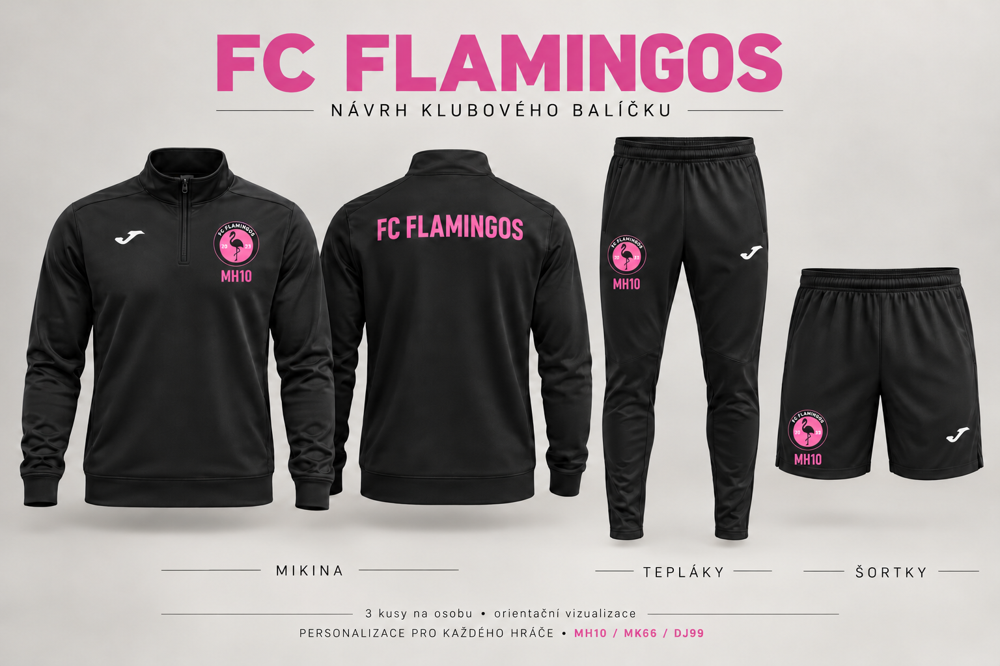

FC Flamingos
Růžový balet 🏆🦩
Růžový balet 🏆🦩
Vedení Růžového baletu. Ozvi se nám!

Kliknutím otevřeš tabulku v plné velikosti.
FC Flamingos proti:
FC Flamingos proti:
FC Flamingos proti:
FC Flamingos proti:
FC Flamingos proti:
FC Flamingos proti:
FC Flamingos proti:
FC Flamingos proti:
FC Flamingos proti:
FC Flamingos proti:
FC Flamingos proti:
FC Flamingos proti:
20. 6. 2026
📍 Na Rozcestí — Vratislavice nad Nisou
FC Flamingos vs SK Gamble 3:2
FC Flamingos vs San Miguel C. F. 0:4
FC Flamingos vs FC Braničtí Rytíři 1:1
Po penaltách 5:3
🥉 V play-off jsme získali historické třetí místo!
Termíny zápasů pro nadcházející sezónu brzy zveřejníme. Sledujte náš web a sociální sítě, ať vám nic neunikne!

Pozice: Brankář
Číslo: 99
Věk: 23 let
Statistiky: 11 čistých kont, 1 gól, 10 asistencí

Pozice: Brankář
Číslo: 1
Věk: 17 let
Statistiky: 1 čisté konto

Pozice: Obránce
Číslo: 66
Věk: 19 let
Statistiky: 4 góly, 5 asistencí

Pozice: Obránce
Číslo: 4
Věk: 20 let
Statistiky: -

Pozice: Obránce
Číslo: 13
Věk: 19 let
Statistiky: 3 góly

Pozice: Obránce
Číslo: 69
Věk: 21 let
Statistiky: 1 gól, 5 asistencí

Pozice: Záložník
Číslo: 28
Věk: 19 let
Statistiky: 9 gólů, 4 asistence

Pozice: Záložník
Číslo: 11
Věk: 19 let
Statistiky: 1 asistence

Pozice: Záložník
Číslo: 14
Věk: 17 let
Statistiky: 3 góly, 2 asistence

Pozice: Záložník
Číslo: 10
Věk: 20 let
Statistiky: 9 gólů, 15 asistencí

Pozice: Záložník
Číslo: 6
Věk: 19 let
Statistiky: 24 gólů, 7 asistencí

Pozice: Útočník
Číslo: 27
Věk: 19 let
Statistiky: 8 gólů, 3 asistence

Pozice: Útočník
Číslo: 23
Věk: 19 let
Statistiky: 3 góly, 5 asistencí

Pozice: Útočník
Číslo: 7
Věk: 20 let
Statistiky: 3 góly, 4 asistence

Pozice: Útočník
Číslo: 8
Věk: 21 let
Statistiky: -
FC Flamingos vznikl na podzim roku 2023 v Liberci. Klub založili současný kapitán a historicky nejlepší střelec Matyáš František Hájek a klubová legenda David Drobný.
Začátky byly poměrně krušné a výsledky nebyly vždy příznivé. Během následujících sezón se však výrazně proměnila kostra týmu. Přišla řada opor, které pomohly klubu posunout se vpřed.
Naše barvy jsou růžová a černá a přezdívka „Růžový balet“ k nám neodmyslitelně patří. Působíme v soutěži Sudety Cup a dění kolem klubu sdílíme také na sociálních sítích.
V základní části Season VI jsme obsadili čtvrté místo se 41 body po 36 zápasech.
V play-off Sudety Cupu 2026 jsme vybojovali historické třetí místo. Ve čtvrtfinále jsme porazili SK Gamble 3:2. Po semifinálové porážce 0:4 s San Miguel C. F. jsme v zápase o třetí místo remizovali s FC Braničtí Rytíři 1:1 a penaltový rozstřel vyhráli 5:3, a zaslouženě jsem si tak připsali historické třetí místo.
Momentky ze zápasů, emoce i dění kolem hřiště. Vyber si kolo a otevři celé fotoalbum na Zoneramě. Alba obsahují fotografie všech týmů Sudety Cupu.
20. 6. 2026
Vzpomínky na turnaj, ze kterého jsme přivezli historické třetí místo.
7. 6. 2026
31. 5. 2026
10. 5. 2026
26. 4. 2026
19. 4. 2026
29. 3. 2026
22. 3. 2026
15. 3. 2026
Růžový balet vítá novou posilu! Přidává se k nám Polis, teprve šestnáctiletý talent a pilíř obrany z akademie FC Slovan Liberec. Máme radost, že náš tým rozšíří mladý hráč s chutí hrát a posouvat se dál.
Polis v současnosti hájí barvy FC Slovan Liberec ve druhé dorostenecké lize U17. Zkušenosti má také z první dorostenecké ligy U17. Do naší obrany tak přinese zkušenosti z akademického prostředí i mladou energii.
O zapojení do FC Flamingos projevil Polis obrovský zájem a my jsme rádi, že si cestu k našemu klubu nacházejí i nadějní mladí hráči z akademií. Je to pro nás povzbuzení a další motivace pokračovat v práci, díky které se Růžový balet postupně posouvá dál.
Na jeho první vystoupení v růžovém dresu se můžete těšit už na Xmas Chaos Cupu v prosinci 2026. Přijďte podpořit Flamingos a přivítat naši novou posilu!
Vítej mezi námi, Polisi. Těšíme se na společné zápasy!
Máme obrovskou radost! Společnost Imobilien Group podpořila FC Flamingos sponzorským darem ve výši přibližně 20 000 Kč. Pro náš klub je to významná pomoc a další velký krok vpřed.
Díky této podpoře budeme mít nové klubové vybavení značky Joma. Připravujeme černé mikiny, tepláky a šortky s růžovým znakem Flamingos a personalizací pro jednotlivé hráče. Iniciály a číslo, například MH10, MK66 nebo DJ99, budou umístěné pod klubovým logem. Na zádech mikiny zůstane nápis FC FLAMINGOS.

Jednotné oblečení pro nás znamená víc než jen nový vzhled. Pomůže nám reprezentovat klub při cestách na zápasy i mimo hřiště a podtrhne to, co Flamingos spojuje — týmového ducha a chuť posouvat se dál.
Celé společnosti Imobilien Group děkujeme za důvěru a podporu. Velmi si vážíme toho, že nám pomáháte budovat další kapitolu Růžového baletu!
Poznejte našeho partnera Imobilien Group ↗FC Flamingos je klub malého fotbalu z Liberce. Od roku 2023 budujeme tým, který spojuje chuť hrát, týmového ducha a výrazné růžovo-černé barvy. Teď hledáme další partnery, kteří nám pomohou posunout klub dál.
Uvítáme finanční podporu na chod klubu, startovné v soutěžích a další rozvoj. Pomůže nám také materiální podpora — například dresy, tréninkové oblečení, míče nebo jiné sportovní vybavení. Prostor je i pro spolupráci formou služeb či společných akcí.
Prezentaci vaší firmy na klubovém webu s logem a odkazem, zmínky a poděkování na našich sociálních sítích nebo společný obsah. Podle rozsahu spolupráce se můžeme domluvit také na umístění loga na dresech, klubovém oblečení či reklamních bannerech při akcích, kde to pořadatel umožní.
Nemusí jít o velkou firmu ani vysokou částku. Rádi se domluvíme s místními podnikateli i většími společnostmi a připravíme spolupráci podle vašich možností.
Chcete být vidět společně s FC Flamingos? Napište nám a pojďme probrat možnosti!
Napište nám: fc.flamingos.liberec@gmail.comFC Flamingos se připravuje na další krok — pro nadcházející sezónu plánujeme vytvoření B týmu! Chceme rozšířit náš klub a dát prostor dalším hráčům, kteří mají chuť obléknout růžovo-černé barvy.
Přípravy jsou zatím na začátku a podrobnosti o soupisce i fungování týmu postupně představíme. Sledujte náš web a Instagram, kde se dozvíte další novinky.
Nová kapitola Růžového baletu se blíží! 🦩
Za Růžovým baletem stojí i naši partneři. Děkujeme za podporu FC Flamingos!